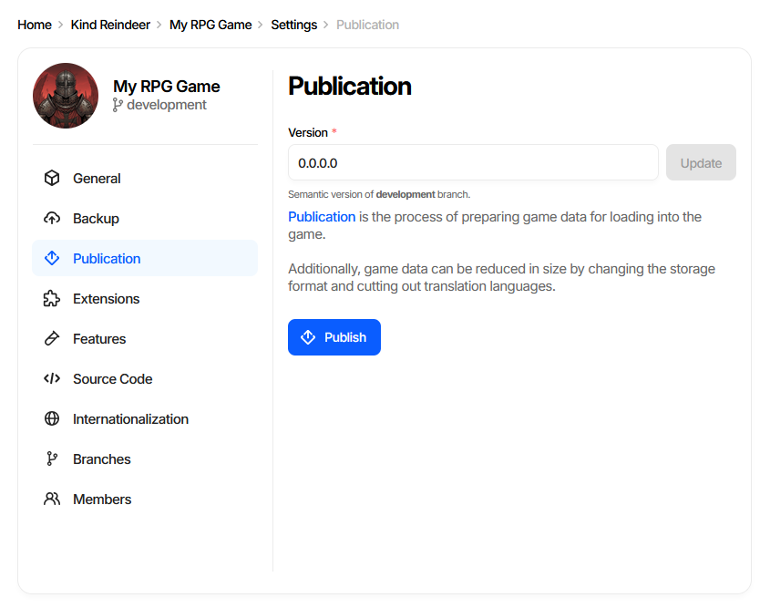
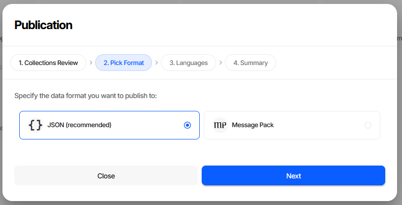
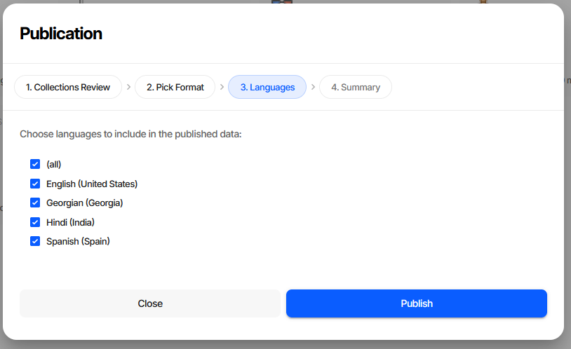
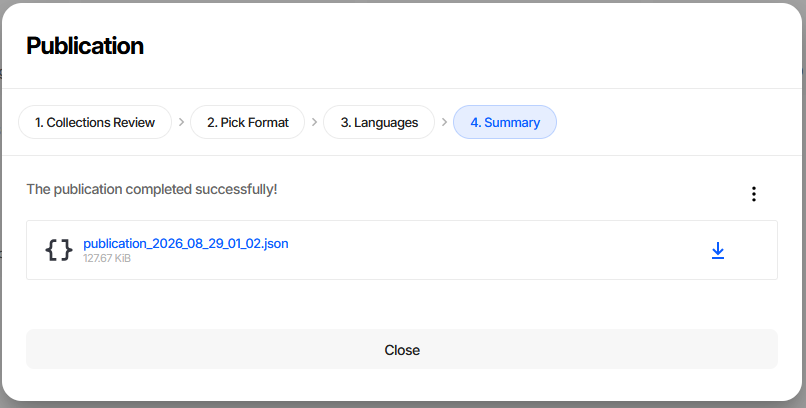
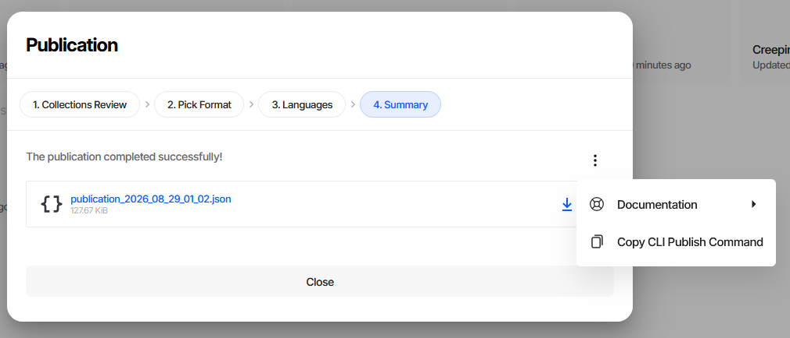
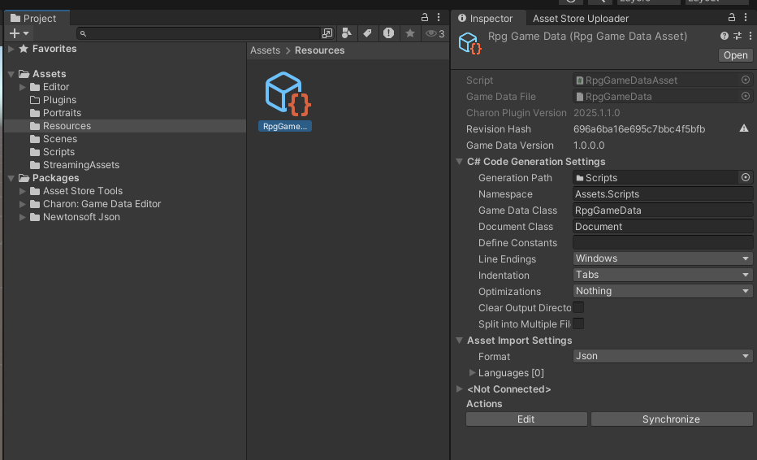
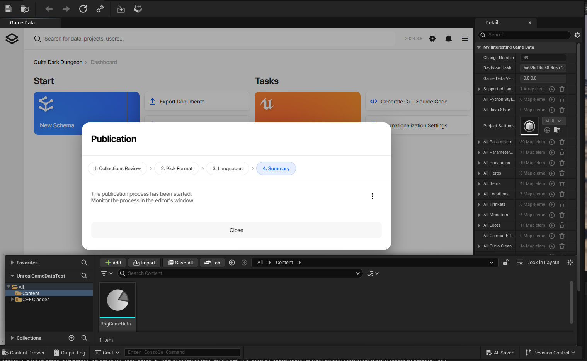

Publishing Game Data
Publication turns your working game data into a game-ready file. Localization for the languages you did
not select is stripped out, and the result is written as JSON or MessagePack that the
generated code can load directly.
This is the last step of the content pipeline, and where it ends depends on where you run it from: in the web editor you download a file, while the Unity and Unreal Engine plugins import the result into the engine for you and regenerate the source code in the same pass.
Data Version
Project Settings → Publication carries a Version field - a semantic version for the game data itself, separate from the Charon tool version and from your game’s build number. It identifies the data snapshot, which is what you quote when a designer asks which data a shipped build was made from.

The accepted shape is three dot-separated numbers, an optional fourth, and an optional -suffix, up to
16 characters - 1.4.0, 1.4.0.2 and 1.4.0-rc1 are all valid. The hint under the field names the
branch being edited, because every branch carries its own version.
Update saves the change and stays disabled until the field is edited. Editing requires the Designer role or higher.
The version lives on the project settings document, so it travels with the data - into backups, ordinary exports, and the published file alike.
At runtime the generated game data class carries the value next to the revision hash and change number. It is read straight out of the project settings document while the file is deserialized, so the game can log or display which data snapshot it loaded:
Debug.Log($"Game data version: {gameData.GameDataVersion}");
Target |
Accessor |
|---|---|
C# 7.3 |
|
UE C++ |
|
Haxe |
|
Lua |
|
TypeScript |
|
C# 4.0 |
Not generated |
CLI equivalent
Added in version 2026.4.0: DATA UPDATEPROJECTSETTINGS
dnx dotnet-charon -- DATA UPDATEPROJECTSETTINGS \
--dataBase "https://charon.live/view/data/MyGame/develop/" \
--property Version \
--value "1.4.0" \
--credentials "$CHARON_API_KEY"
Stamping the version from CI just before the publish step keeps every shipped file traceable to the build that produced it; see CI/CD for a worked example and DATA UPDATEPROJECTSETTINGS for the full parameter list.
Publishing from the Editor
Publish on the dashboard opens the Publication wizard.

Step 1. Collections Review
A validation pass over every collection, so you find out about broken data before it reaches the game rather than after.

N issues counts integrity errors, N missed translations counts untranslated text. Clicking a
collection opens it filtered to just the documents with errors.
Publication is never blocked - Next stays enabled whatever the review finds - but the two severities deserve different treatment. Missing translations ship as visible gaps in the affected languages. Integrity errors are broken data: generated code assumes the data satisfies the schema, so a dangling reference or a missing required value usually surfaces at runtime as a null reference or a failed load. Fix those before publishing.
See Validation for the full description of this step and how to reproduce it in CI.
Step 2. Pick Format

Format |
When to use |
|---|---|
JSON (recommended) |
Default. Readable, diffable, debuggable - keep it unless load time or file size is a measured problem. |
Message Pack |
Compact binary. Smaller files and faster parsing, at the cost of not being human-readable. |
Both formats carry the same data and are loaded by the same generated code, so switching later costs nothing but a re-publish.
Step 3. Languages

Tick (all) to publish every language, or select individual ones. Languages left unticked are stripped from the output entirely - this is how you keep a Japanese-only build from shipping the German strings.
At least one language is required. Publish on this step starts the process.
Step 4. Summary

The published file is offered as a download, named after the date and time of publication and annotated with its size.

The ⋮ menu has Copy CLI Publish Command, which puts the exact CLI equivalent of the choices you just made on the clipboard. It is the quickest way to move a publication you configured by hand into a build script.
Publishing from a Game Engine Plugin
The Unity and Unreal Engine plugins embed the same editor and the same wizard. The difference is the last step: instead of handing you a file to download, the plugin imports the published data into the engine’s own asset format and regenerates the source code. Step 4 says “The publication process has been started. Monitor the process in the editor’s window” rather than showing a download link.
Unity

The published data is imported into the game data .asset file as a BLOB in the format chosen during
publication - JSON or Message Pack - and the C# source code is regenerated. At runtime the generated code
reads the game data out of that BLOB, so the .asset is the only thing your build needs to ship.
The Inspector for the asset holds the settings the process uses:
Asset Import Settings -
FormatandLanguages, the same two choices as wizard steps 2 and 3.C# Code Generation Settings - output path, namespace, class names, indentation and the rest of the code generation options.
Actions - Edit opens the editor UI, Synchronize re-runs publication and code generation with the settings above.
Use Synchronize whenever the data structure changes: it republishes the data and regenerates the C# code in one step, which is what keeps the asset and the code in agreement.
See Unity Plugin Overview for installation and the rest of the plugin.
Unreal Engine

The published data is imported into the game data .uasset and stored in Unreal’s own binary format -
the screenshot shows it in the Details panel as ordinary Unreal properties - and the C++ source code is
regenerated. Nothing about the intermediate JSON survives into the packaged game.
Because the data is converted into Unreal’s representation on import, the format step of the wizard has nothing to decide and is disabled; the language selection still applies.
See Unreal Engine Plugin Overview for installation and the rest of the plugin.
Where the data ends up
Target |
Output |
Stored as |
Format choice |
|---|---|---|---|
Web editor |
downloaded file |
JSON or MessagePack file |
yours |
Unity |
game data |
BLOB in the chosen format |
yours |
Unreal Engine |
game data |
Unreal’s binary format |
fixed |
In every case the source code is generated from the same schema, so game code written against it does not change when you switch targets.
Publishing from the CLI
Publication is DATA EXPORT with --mode publication:
dnx dotnet-charon -- DATA EXPORT \
--dataBase ".\gamedata.json" \
--mode publication \
--languages {en-US} \
--output ".\StreamingAssets\gamedata_pub.json" \
--outputFormat json
Key parameters:
--mode publication- keeps the system schemas and the project settings document that the generated code needs, and strips localization for the languages you did not select. Without it the export omits the system schemas and the generated code cannot load it.--languages- the languages to include, in braces. Omit the parameter to publish all languages.--outputFormat-jsonormsgpack, matching the wizard’s format step.
Tip
Rather than assembling this by hand, configure the publication once in the wizard and use Copy CLI Publish Command on the Summary step.
Publishing on every commit is the usual way to keep a build pipeline in sync with the data; see CI/CD for a worked example, and DATA EXPORT for the other export modes.